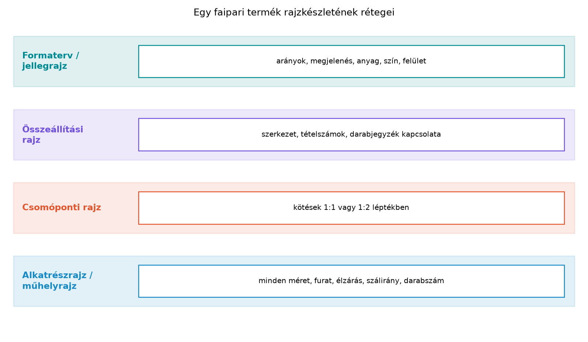

Vevői megrendelésnél a vevő először látni akarja a bútor külalakját, arányait, anyagát és színét. Az asztalosnak viszont a gyártáshoz alkatrészenként kell tudnia minden méretet, furatot, kötést és élzárást. Ugyanaz a termék ezért többféle rajzot igényel.
Ha egyetlen „szép” rajz alapján próbálnánk gyártani, hiányoznának a rejtett szerkezetek, furatok és a gyártási méretek. Ha pedig minden gyártási adatot rázsúfolnánk egy látványrajzra, az áttekinthetetlen lenne. A rajzfajták pontosan ezt a munkamegosztást oldják meg.
A gyakorlatban mindig érvényesül a rajz–anyag–művelet hármas: a rajzról készíthető anyagjegyzék, az anyagjegyzékből pedig műveletsor.

Definíció. A formaterv vagy jellegrajz a termék külalakját, arányait, fő befoglaló méreteit, anyagát, színét és felületkezelését mutatja. Célja, hogy a vevő vagy a tervező el tudja dönteni: ilyen bútort szeretne-e. Gyártási furatokat, csapozást és rejtett kötéseket nem kell tartalmaznia.
Definíció. Az összeállítási rajz a termék alkatrészeit egymáshoz illesztve, a szerelt állapotot mutatja. Tartalmazza a befoglaló és a legfontosabb csatlakozó méreteket, valamint tételszámokat. A tételszámok azonosítják az alkatrészeket és a beépített kötőelemeket.
Definíció. A csomóponti rajz vagy szerkezeti részletrajz egyetlen kapcsolatot, sarkot vagy kötést mutat nagy léptékben. Tipikus léptéke 1:1 vagy 1:2. Pontosan megmutatja a csapozást, a furatokat, a ragasztóvonalat, az élzárást és a hézagokat. Nem kell rajta a teljes termék.
Definíció. Az alkatrészrajz egyetlen alkatrészt ábrázol minden olyan mérettel, amely az alkatrész elkészítéséhez szükséges. A műhelyrajz az alkatrészrajz gyártásközpontú változata: kiegészül gyártási megjegyzésekkel, száliránnyal, furat- és élzárási adatokkal, bázisélekkel és megengedett eltérésekkel.
Definíció. A szabadkézi méretes vázlat nem léptékhelyes rajz, de nagyjából megtartja az arányokat, és minden lényeges méretet, anyagot, valamint megjegyzést feltüntet. Helyszíni felmérésnél, javításnál, másolásnál és gyors tervezésnél használjuk.
Szabvány. A rajzfajtákat és a rajzkészlet formai elemeit a faiparban is a szabványos rajzi alapok szerint kell készíteni és értelmezni: MSZ EN ISO 128 (műszaki rajzok ábrázolásának általános alapelvei), MSZ EN ISO 129 (méretmegadás), MSZ EN ISO 5455 (méretarányok) és MSZ EN ISO 7200 (rajzszöveg, rajzfej) – jelölve: a pontos, hatályos szabványszámok és a faipari rajzfej-formátum ellenőrizendők. A faipari rajzon a méreteket milliméterben adjuk meg, de a mm jelölést a rajz méretvonalán nem írjuk ki. Alapértelmezett vetítési rendszer: európai (E) vetítés, ahogyan azt a Vetületi ábrázolás: nézetek és nézetrend alfejezetben tanultuk.
A rajzfajták egymásra épülnek. A formatervből még nem lehet fűrészelni, a műhelyrajzból viszont már igen.
| Rajzfajta | Fő kérdés | Tartalom | Tipikus lépték | Elsődleges felhasználó |
|---|---|---|---|---|
| Formaterv / jellegrajz | Hogyan néz ki a termék? | befoglaló méret, arányok, anyag, szín, felület | 1:5 vagy 1:10 | vevő, tervező, asztalos |
| Összeállítási rajz | Melyik alkatrész hová kerül? | szerkezet, tételszámok, fő méretek, darabjegyzék | 1:2, 1:5 vagy 1:10 | gyártás-előkészítő, szerelő |
| Csomóponti rajz | Hogyan kapcsolódik a két anyagdarab? | kötés, furat, ragasztóvonal, élzárás, hézag | 1:1 vagy 1:2 | asztalos, gyártás, minőségellenőrzés |
| Alkatrészrajz / műhelyrajz | Milyen darabot kell legyártani? | minden alkatrészméret, furat, élzárás, szálirány, darabszám | 1:1, 1:2 vagy 1:5 | asztalos, gépkezelő |
A táblázatban szereplő léptékek tájékoztató értékek, a tényleges rajz a termék méretétől, a rajzlap nagyságától és a vállalati gyakorlattól függ.
Szabály. Az összeállítási rajzon szereplő tételszámnak és a darabjegyzék tételszámának egyeznie kell. Ugyanaz az alkatrész ugyanazt a tételszámot kapja a rajzon és a jegyzékben. A rajzkészletben a tételszámok nem ismétlődhetnek.
Készítsünk el egy kis nyitott falipolcot. A termék tömör fenyőből készül, befoglaló mérete:
A szélesség 500 mm, a mélység 180 mm, a magasság 140 mm. A polclap két 18 mm vastag oldallap közé kerül, köldökcsappal és ragasztással.
Az oldallapok miatt a polclap hossza nem 500 mm, hanem:
Ez jól mutatja, hogy az összeállítási rajz befoglaló méretéből ki kell számolni az alkatrész tényleges méretét.
A példa rajzkészlete:
| Rajz jele | Rajzfajta | Tartalom | Lépték |
|---|---|---|---|
| RSZ-01 | Formaterv | elölnézet és oldalnézet 1:5, mellette perspektivikus látvány (lépték nélkül), anyag: fenyő, felület: olaj/viasz | 1:5 / – |
| RSZ-02 | Összeállítási rajz | elölnézet, oldalnézet, felülnézet, tételszámok 1–5 | 1:2 |
| RSZ-03 | Csomóponti rajz | A–A metszet a polclap–oldallap köldökcsapos kötéséről | 1:1 |
| RSZ-04 | Műhelyrajz | oldallap, 2 db, 140 × 180 × 18 mm | 1:1 |
| RSZ-05 | Műhelyrajz | polclap, 1 db, 464 × 180 × 18 mm | 1:2 |
| RSZ-06 | Műhelyrajz | hátmerevítő léc, 1 db, 464 × 60 × 12 mm | 1:2 |
A darabjegyzék tételei:
| Tétel | Megnevezés | Db | Anyag | Kész méret h × sz × v (mm) | Megjegyzés |
|---|---|---|---|---|---|
| 1 | Oldallap | 2 | fenyő, tömör | 140 × 180 × 18 | függőleges, belső oldalán köldökcsapfuratok |
| 2 | Polclap | 1 | fenyő, tömör | 464 × 180 × 18 | vízszintes, két végén furat |
| 3 | Hátmerevítő léc | 1 | fenyő, tömör | 464 × 60 × 12 | polclap alatt, hátul |
| 4 | Köldökcsap | 4 | bükk, Ø8 × 35 | Ø8 × 35 | példa méret, ellenőrizendő |
| 5 | Rejtett akasztó | 2 | fém | gyártó szerint | falra szereléshez |
Továbbvitt eredmény. Ezt a rajzfajtákból, tételszámokból és darabjegyzékből álló rendszert használjuk később a Szélesítő toldások és erősítéseik ábrázolása, a Helyszíni felmérés, vázlatrajz és építőipari rajzok olvasása, a CAD, látványtervezés, optimalizálás és CNC-adatátvitel, a A bútor fogalma, rendeltetése, csoportosítása és funkcionális méretei és a Szerelési dokumentáció értelmezése és készítése; az összeállítás megszervezése alfejezetekben. A műhelyrajzok furatai közvetlenül a Szabásjegyzék és anyagnorma táblázatába kerülhetnek.
Rajzleírás – RSZ-02 összeállítási rajz.
A rajzon három nézet szerepel. Az elölnézet 500 mm
széles és 140 mm magas téglalap. Bal és jobb oldalon egy-egy 18 mm
széles, 140 mm magas oldallap látható. Felül a polclap vízszintes
kontúrja húzódik a bal oldallap belső élétől a jobb oldallap belső
éléig. A hátmerevítő léc takart élét szaggatott vonal jelzi. Az
oldalnézet jobbról mutatja a 180 mm mély terméket. A
felülnézet 500 × 180 mm-es téglalapot ad, benne a két
oldallap és a polclap élvonalaival. A tételszámokat rövid mutatóvonalak
kötik az alkatrészek kontúrjához.
A HTML-változatban a darabjegyzék egy sorára mutatva a rajzon kiemelődik az alkatrész (és fordítva); a „Robbantott nézet” gomb széthúzza az elölnézetet.
Rajzleírás – RSZ-03 csomóponti rajz.
A csomóponti rajz metszősíkja az A–A jelű függőleges
sík, amely az első köldökcsap középpontján halad át. A rajz 1:1
léptékben mutatja a bal oldallap és a polclap bal végének találkozását.
A polclap végén egy Ø8 mm-es, 26 mm mély furat látható. Az oldallap
belső oldalán egy Ø8 mm-es, 11 mm mély vakfurat látható (együtt 37 mm).
A köldökcsap Ø8 × 35 mm, így furatonként kb. 1 mm ragasztótér marad
(tájékoztató, ellenőrizendő: csap- és ragasztógyártó). A ragasztóvonalat
vékony folytonos vonal jelzi. A furattengelyek 9 mm-rel a polclap felső
éle alatt, az első éltől mért 50 mm és 130 mm távolságra vannak.
A méretek példaértékek, a tényleges köldökcsapméretet
és furatelrendezést a vasalat- és ragasztógyártó adata, valamint a
gyártandó alkatrész mérete határozza meg (ellenőrizendő:
szerszám- és alkatrészadat).
Az alkatrészrajz inkább azt mondja meg, mekkora a kész darab. A műhelyrajz azt is megmondja, hogyan gyártjuk.
A műhelyrajzon a méreteken kívül gyakran szerepel:
Szabály. A műhelyrajzon a furatokat, nútokat és csapokat mindig ugyanahhoz a bázisélhez viszonyítva adjuk meg. Ha az egyik furat az elülső éltől, a másik a hátsó éltől van méretezve, akkor a kicsi méreteltérések összeadódhatnak. A báziséltől mért adatokkal a munkadarabot megbízhatóan be lehet állítani.
A rajzon a méretmegadás sorrendje a faiparban: hossz ×
szélesség × vastagság, mm-ben, de a rajzon a mértékegységet nem
írjuk ki. A szöveges jegyzékben viszont kiírjuk:
464 × 180 × 18 mm.
A helyszíni felméréskor ritkán van idő pontos műszaki rajzot készíteni. Ilyenkor szabadkézi méretes vázlatot rajzolunk.
A vázlat célja, hogy a műhelyben visszaidézhető legyen:
Technológiai sorrend – helyszíni vázlat készítése
A fénykép mellé rajzolt méretek hasznosak, de csak kiegészítik a vázlatot. A fotón a távolabbi elemek kisebbnek látszanak; ezért a mért értéket mindig a vázlatra írjuk, nem a fotóról „becsüljük”.
A rajzkészlet akkor jó, ha a műhelyben egy gyakorlott asztalos anélkül el tudja készíteni a terméket, hogy újra kérdeznie kellene.
Rajzdokumentum-ellenőrzés:
Ha eltérést találunk, először az összeállítási rajzot, a darabjegyzéket és a bázisméreteket javítjuk. A javítást utána vezetjük át minden érintett alkatrészrajzon.
Hiba 1: A formatervet használják
műhelyrajzként.
Tünete: a munkadarab szép arányú, de nincs megadva a furatok és a
kötések helye. Oka: a rajzkészlet nem készült el. Helyes gyakorlat: a
formatervet csak jóváhagyásra használjuk, és külön műhelyrajzot
készítünk.
Hiba 2: A tételszámok nem egyeznek a
darabjegyzékkel.
Tünete: a gyártás előkészítésekor az 1. tételből nem derül ki, hogy 2 db
oldallap tartozik hozzá. Oka: a rajzot és a jegyzéket külön készítették,
majd ellenőrzés nélkül módosították. Helyes gyakorlat: minden
tételszám-változást egyszerre javítanak a rajzon és a jegyzékben.
Hiba 3: A csomóponti rajz nincs 1:1 vagy 1:2
léptékben.
Tünete: a papíron elfér a csap, a valóságban viszont nem illeszkedik.
Oka: kicsinyített, szemléletrajzi csomópontból próbáltak dolgozni.
Helyes gyakorlat: a csomóponti rajzot a gyártandó kapcsolat léptékében,
a szerelési réteggel és furatokkal készítjük.
Hiba 4: A szabadkézi vázlat csak fényképre
épül.
Tünete: a beépített bútor 10–20 mm-rel nagyobb lesz a helyénél, mert a
fotó perspektívája torzít. Oka: a felmérő nem mért meg minden kritikus
távolságot. Helyes gyakorlat: a fotó csak tájékoztatás, a vázlaton
mindig mért érték legyen.
Egy tanuló beépített gardróbszekrényt mért fel. Készített fényképet, és felírta a nyílás elülső szélességét 1200 mm-re. A műhelyben pontosan 1200 mm széles szekrényt gyártottak. A helyszínen a szekrény mégsem fért be, mert a bal oldali fal a szoba belseje felé kissé bedőlt, és a nyílás hátul már 1185 mm volt. A hiba oka az volt, hogy a vázlat csak elölnézeti szélességet tartalmazott, felülnézeti vagy vízszintes metszeti vázlatot nem. A tanulság: a helyszíni szabadkézi vázlatnak a nyílás több magasságban és mélységben mért méreteit kell tartalmaznia, és a falak ferdeségét is jelölni kell.
A válaszok a Megoldások elején találhatók.
1. feladat (A)
Sorold fel a faipari rajzkészlet öt rajzfajtáját, és mindegyikhez írj
egy-egy rövid mondatot a céljáról.
2. feladat (A)
Egy oldallap 18 mm vastag. Egy polc teljes külső szélessége 600 mm, a
polclap két oldallap közé kerül. Mekkora a polclap hossza, ha mindkét
oldallap 18 mm vastag?
3. feladat (B)
A falipolc példájában az RSZ-02 összeállítási rajzról hiányzik a
köldökcsapfurat mélysége. Melyik rajzra kell ez az adat? Indokold
meg.
4. feladat (B)
Készíts szöveges vázlatot egy 1200 × 600 × 350 mm-es beépített
cipősszekrény helyszíni felméréséhez. Milyen nézeteket és milyen
kritikus méreteket írnál fel?
5. feladat (C)
Egy rajzkészletben az összeállítási rajz befoglaló magassága 800 mm, a
tetőlap és az aljlap egyaránt 18 mm vastag. A tetőlap az oldallapok
tetejére kerül, az aljlap az oldallapok közé. Mekkora az oldallap hossza
és a szekrény belső tiszta magassága? Fogalmazd meg, miért veszélyes, ha
a műhelyrajz nem rögzíti a bázist.
6. feladat (D)
Mérj fel otthon egy asztalt vagy szekrényt. Készíts szabadkézi méretes
vázlatot elölnézetben és oldalnézetben, tüntesd fel a befoglaló
méreteket, az anyagot és legalább egy csomóponti vázlatot. Utána készíts
hozzá egy rövid rajzkészlet-listát.
Önellenőrzés – válaszok
1. feladat megoldása
- Formaterv: a termék külalakját, arányait, anyagát,
színét mutatja.
- Összeállítási rajz: megmutatja, melyik alkatrész hová
kerül, tételszámokkal.
- Csomóponti rajz: egy kötést, sarkot, kapcsolatot
mutat nagy léptékben.
- Alkatrészrajz: egy alkatrész minden kész méretét
tartalmazza.
- Műhelyrajz: gyártási méreteket, furatokat, élzárást,
szálirányt és megjegyzéseket ad.
2. feladat megoldása
A polc szélessége 600 mm. A két oldallap együttes vastagsága:
A polclap hossza:
Tehát a polclap hossza 564 mm. A számítás feltételezi, hogy a polclap a két oldallap belső síkja közé illeszkedik.
3. feladat megoldása
A furatmélység a csomóponti rajzra vagy a
műhelyrajzra kerül. Az összeállítási rajz elsősorban a
szerelt helyzetet és a tételszámokat mutatja, nem feltétlenül
tartalmazza az egyes furatok gyártási mélységét. A csomóponti rajz 1:1
léptékben pontosan megmutatja a köldökcsap, a furatok és a ragasztóvonal
kiterjedését.
4. feladat megoldása
Elölnézet: a nyílás szélessége, magassága, a lábazat magassága.
Oldalnézet: a mélység, a padló és a fal esetleges dőlése. Felülnézet: a
bal és jobb oldali mélység, a falak szögeltérése, vezetékek helye.
Kritikus méretek: szélesség alul, középen, felül; mélység jobb és bal
oldalon; magasság jobb és bal oldalon; a lábazat kiállása; a szegélyek,
csövek, konnektorok helye. A bútor gyártásához a legkisebb biztonságos
nyílásméretet kell megállapítani, és a hibát a vázlatra feljegyezni.
5. feladat megoldása
A teljes magasság 800 mm; a tetőlap 18 mm, az aljlap 18 mm. A tetőlap
ráül az oldallapokra, az aljlap az oldallapok közé kerül, ezért:
Ha a műhelyrajz nem rögzíti, hogy a tetőlap ráül vagy beül, a 18 mm-es különbség (782 vagy 800 mm) selejtet okoz; ezért a bázis az aljlap alsó síkja. A műhelyrajznak meg kell adnia, honnan méri az oldallap hosszát, és a sarkok minden furatát ugyanattól a bázisél-től kell számítani.
6. feladat megoldása
A gyakorlati vázlatnak tartalmaznia kell: a bútor nevét, a felmérés
dátumát, az elölnézetet és oldalnézetet, a befoglaló méreteket, az
anyagot, a felületet, legalább egy csomóponti vázlatot. A hozzá tartozó
rajzkészlet: formaterv, összeállítási rajz, csomóponti rajz, alkatrész-
vagy műhelyrajzok. Az ellenőrzésnél azt nézzük, hogy a vázlatról egy
másik asztalos is el tudná-e készíteni a bútort.
A faipari rajzfajták egymásra épülnek. A formaterv a külalakról dönt, a csomóponti rajz a kötések szerkezetét nagy léptékben mutatja, az összeállítási rajz a tételszámok és a darabjegyzék segítségével rendezi az alkatrészeket, az alkatrészrajz és a műhelyrajz pedig a gyártáshoz szükséges minden méretet, furatot, élzárást és szálirányt adja meg. A rajzok méretét mm-ben adjuk meg, a rajzon a mm jelölést nem írjuk ki. A műhelyrajzon közös báziséltől méretezünk, hogy a kicsi eltérések ne adódjanak össze. A helyszíni felméréshez szabadkézi méretes vázlatot készítünk, amely arányaiban közelít, de a méreteket nem léptékhelyesen, hanem mért értékekkel tünteti fel. A fénykép segít, de nem helyettesíti a mérést. Továbbvitt eredmény: a rajzfajták, tételszámok és darabjegyzék rendszerét használja a fakötések rajza, a szabásjegyzék, a CAD-dokumentáció, a bútor- és nyílászárótervek, valamint a szerelési dokumentáció.
A fejezet a hazai faipari szakrajzi gyakorlatra és a szabványos gépészeti rajzi alapokra épül. Ellenőrizendő: az MSZ EN ISO 128, 129, 5455 és 7200 pontos hatályos szabványszámai, valamint az iskolai vagy vállalati rajzfej-kialakítás. A falipolc rajzkészletében szereplő anyag- és kötésméretek, köldökcsapméret, léptékek és gyártási adatok tanulási példák, nem tervezési előírások. Gyártás előtt mindig a tényleges termék, a gép- és szerszámadatok, valamint a vasalat- és anyaggyártó adatlapjai a mérvadók.